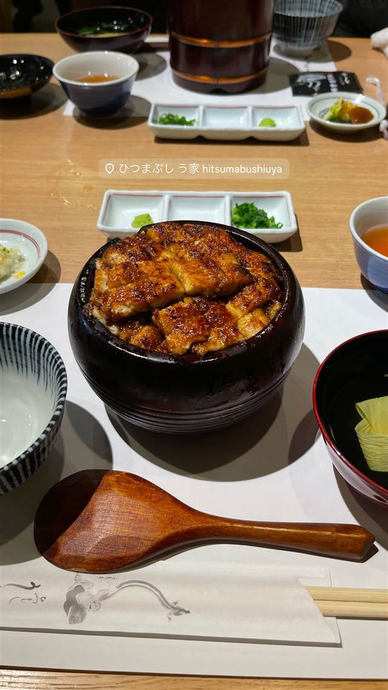

うなぎ・天ぷら · うなぎ · 八事
ひつまぶし う家 八事本店
蒸さない名古屋風の炭火焼き、継ぎ足しタレのひつまぶし
ひつまぶし う家 hitsumabushiuya
名古屋・八事にある炭火焼きうなぎ専門店。蒸さずに焼き上げる名古屋風の調理で皮はパリッと香ばしく、継ぎ足しのタレで仕上げるひつまぶしが名物。
REVIEWS
世間の評判
3.30食べログ
ふんわり鰻と広い個室の心地よさ
- 鰻はふんわり柔らかく皮はパリッと焼かれタレの甘辛バランスが良いという声が多い
- 量がちょうど良く価格も抑えめで全体的にコスパが良いと評価されている
- 個室があり座席も広く老舗らしい落ち着いた雰囲気だという声がある
- GWなど繁忙期の夜は数組並ぶこともあるが回転は早いという声もある
食べログ
| 看板 | ひつまぶし、特選うなぎ（大サイズ） |
|---|---|
| こだわり | 蒸さない名古屋風の焼き方でうなぎを炭火焼きにし、皮はパリッと身はふっくら仕上げる。継ぎ足しのタレを使用。 |
| どこから | 遠方 |
| 予算 | 昼 ¥3,000～¥3,999 夜 ¥4,000～¥4,999 |
| 場所 | 総合リハビリセンター駅 愛知県名古屋市瑞穂区弥富町桜ヶ岡6 |
| メモ | 八事本店のほか名駅店・千葉店を展開。 |
食べたもの：ひつまぶし
NEARBY
近い店・同じ系統の店
-
 うなぎ 浅草
初小川（はつおがわ）
注文を受けてから捌く、継ぎ足し辛口だれの江戸前うな重
昼 ¥3,000～¥3,999 夜 ¥3,000～¥3,999
うなぎ 浅草
初小川（はつおがわ）
注文を受けてから捌く、継ぎ足し辛口だれの江戸前うな重
昼 ¥3,000～¥3,999 夜 ¥3,000～¥3,999
-
 うなぎ 浜松駅（徒歩7分）
うなぎ料理 あつみ
関東風と関西風を組み合わせたあつみ独自の焼き方でうなぎを仕上げる
昼 ¥5,000～¥5,999 夜 ¥5,000～¥5,999
うなぎ 浜松駅（徒歩7分）
うなぎ料理 あつみ
関東風と関西風を組み合わせたあつみ独自の焼き方でうなぎを仕上げる
昼 ¥5,000～¥5,999 夜 ¥5,000～¥5,999
-
 うなぎ 浜松駅
炭焼うなぎ あおいや
蒸さず備長炭で直火焼き、パリッと皮の関西風うな重
昼 ¥3,000～¥3,999 夜 ¥3,000～¥3,999
うなぎ 浜松駅
炭焼うなぎ あおいや
蒸さず備長炭で直火焼き、パリッと皮の関西風うな重
昼 ¥3,000～¥3,999 夜 ¥3,000～¥3,999
-
 うなぎ 静岡駅
かん吉 静岡店
活きたうなぎを店内で捌き、関西風の地焼きで仕上げるひつまぶし
昼 ¥4,000～¥4,999 夜 ¥4,000～¥4,999
うなぎ 静岡駅
かん吉 静岡店
活きたうなぎを店内で捌き、関西風の地焼きで仕上げるひつまぶし
昼 ¥4,000～¥4,999 夜 ¥4,000～¥4,999
-
 うなぎ 赤坂
赤坂ふきぬき
東京で唯一とされる本格的な関東風ひつまぶしを100年続くタレで提供する
昼 ¥3,000～¥3,999 夜 ¥8,000～¥9,999
うなぎ 赤坂
赤坂ふきぬき
東京で唯一とされる本格的な関東風ひつまぶしを100年続くタレで提供する
昼 ¥3,000～¥3,999 夜 ¥8,000～¥9,999
-
 うなぎ 鷺沼
菊水
1日2回、朝と午後にさばく国産うなぎの上品なうな重
昼 ¥4,000～¥4,999 夜 ¥5,000～¥5,999
うなぎ 鷺沼
菊水
1日2回、朝と午後にさばく国産うなぎの上品なうな重
昼 ¥4,000～¥4,999 夜 ¥5,000～¥5,999